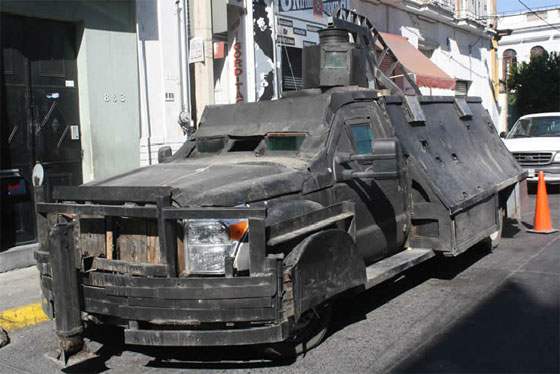

01 / PICKUP STUDY
Cinder
HULL / GAME POINTS 100 / 100100
Wedge silhouette / arcade pulse
CARTEL KIT / THREE-DIMENSIONAL STUDY 005
Photograph-informed truck bodies in a fully 3D desert yard. Orbit the steelwork, follow the chase, and inspect the damage after each exchange.

The historical records identify real vehicles, recovered weapons, and reported outcomes. Arena movement and damage use game rules, with no real combat calibration.
Explore all three trucks in the garage. Drag to orbit, scroll to zoom, and scrub the damage slider. Enter the duel for the action camera, or select a wide or follow view. Space / play, → / step, R / reset. Truck geometry is an artistic interpretation of the references; damage and outcomes use fictional game rules.
Preparing the local engine…
Wedge silhouette / arcade pulse
Box silhouette / arcade pulse
DOCUMENTED RECORDS / MEXICO
Dates, places, recovered objects, and reported outcomes. A seizure or destruction record establishes that event; it does not measure a vehicle’s combat performance.
FGR reported a search in Sinaloa that recovered five improvised armored vehicles, magazines, and ammunition. The exact vehicle makes and groups are not named.
Read the FGR announcement ↗FGR records destruction of vehicles seized from December 2025 through February 2026, linked to 16 investigation files.
Organization attribution: La Jornada reported investigative links to Cártel del Golfo and Cártel del Noreste. The linked FGR bulletin says criminal groups without naming them.
Read the government record ↗The January 2–4 bulletin records a vehicle with improvised armor, two Barrett rifles and four long guns among the recovered items. It does not identify rifle models or a named organization.
Read the official inventory ↗“Narco-tank-1.jpg” — ZestyMasterOfZesty, Wikimedia Commons, CC BY-SA 4.0. The original file is unchanged; display uses responsive sizing and a saturation filter. The displayed adaptation uses the same license. Identification as “Monstruo 2010,” Jalisco, 2011 comes from the Commons uploader; chassis make/model and original photographic provenance were not independently verified here.
The photograph is a visual reference, not a photograph of the later incidents. Those events are separate records. The game’s Cinder, Vanta, and Chalk units are authored 3D models with arbitrary game values; named organizations in the archive are not playable factions or performance ratings.
Download source records ↗MATCH RECORD
The last eight events stay visible here. The replay preserves the bounded event history, setup, and result. Verification reruns the engine and compares the recorded output.